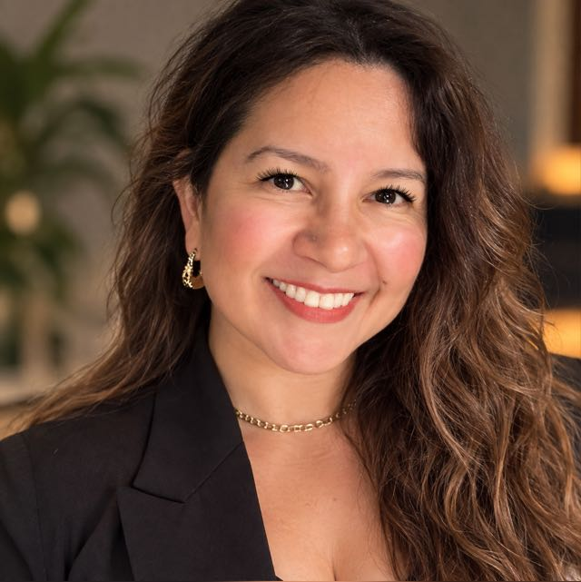

Cambiá la forma en que te mirás y cambiá lo que hacés.
Soy Angie Orduña, Coach Ontológico Profesional Acreditado en la AACOP. Acompaño procesos individuales con el cuerpo y la educación como ejes, y formo coaches en ECOA.

- Coach Ontológico Profesional Acreditado AACOP
- Entrenadora en ECOA Sedes Puerto Iguazú y Oberá, y staff ECOA PM
- Más de 4 años en el coaching Sesiones individuales y formación de coaches
Coach, docente y formadora
Hace más de cuatro años me dedico al coaching. Soy especialista en coaching corporal y en coaching educativo, atiendo sesiones individuales y entreno en las sedes de Puerto Iguazú y Oberá de ECOA. También integro el staff de entrenadores de ECOA PM y facilito el aprendizaje de los alumnos avanzados de la escuela.
Mi llegada como docente y formadora hace que muchos alumnos me busquen para seguir formándose. Esa mirada es parte de cómo acompaño a cada persona.
Más sobre míCómo puedo acompañarte
Elegí por dónde querés empezar. Si no sabés cuál es el camino, escribime y lo charlamos.
-
Sesiones individuales
Un espacio uno a uno para mirar una situación, un objetivo o un cambio que querés hacer, y definir cómo avanzar.
Consultar -
Coaching corporal
El cuerpo también conversa. Trabajamos la postura, las emociones y la manera de habitar eso que querés transformar.
Consultar -
Coaching educativo
Para docentes, formadores y quienes acompañan procesos de aprendizaje: revisar cómo enseñan, se vinculan y sostienen grupos.
Consultar -
Formación en ECOA
Entreno en las sedes de Puerto Iguazú y Oberá, y acompaño a alumnos avanzados que quieren seguir profundizando.
Consultar
Evolutiva Espacio
Un lugar donde se desarrollan charlas, talleres, sesiones y encuentros. Escribime y te cuento qué actividades hay.
Consultar actividades¿Querés dar el primer paso?
Escribime por WhatsApp, me contás qué estás buscando y coordinamos.
Escribir por WhatsApp¿Preferís otro medio? Mirá todas las formas de contacto.